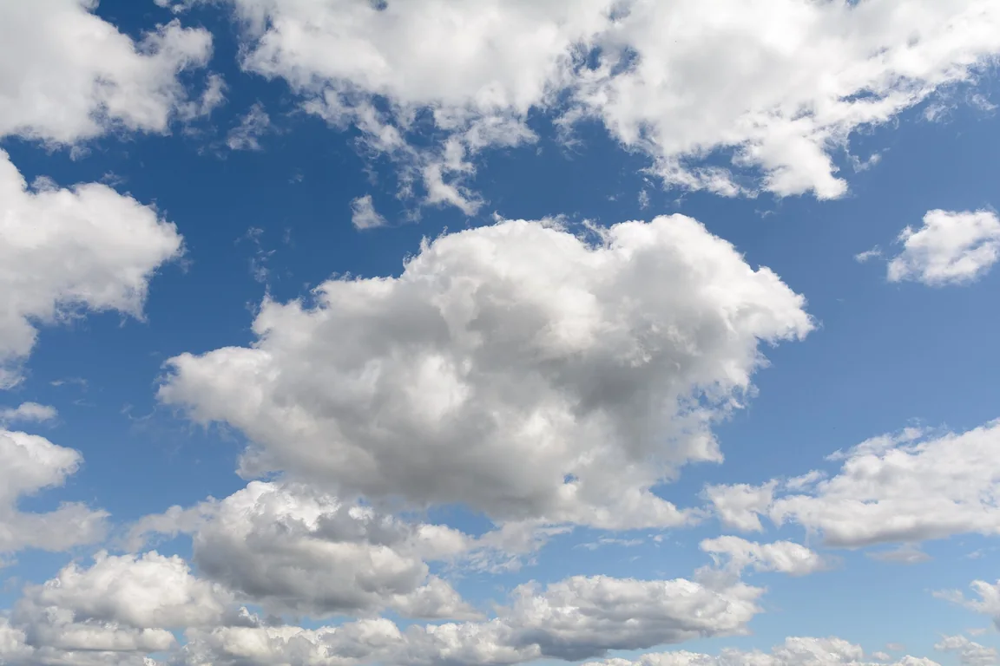
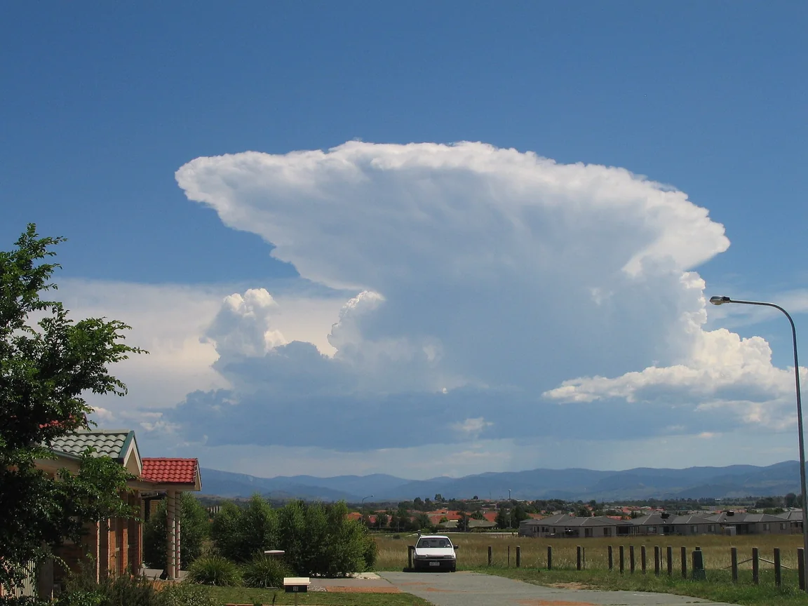
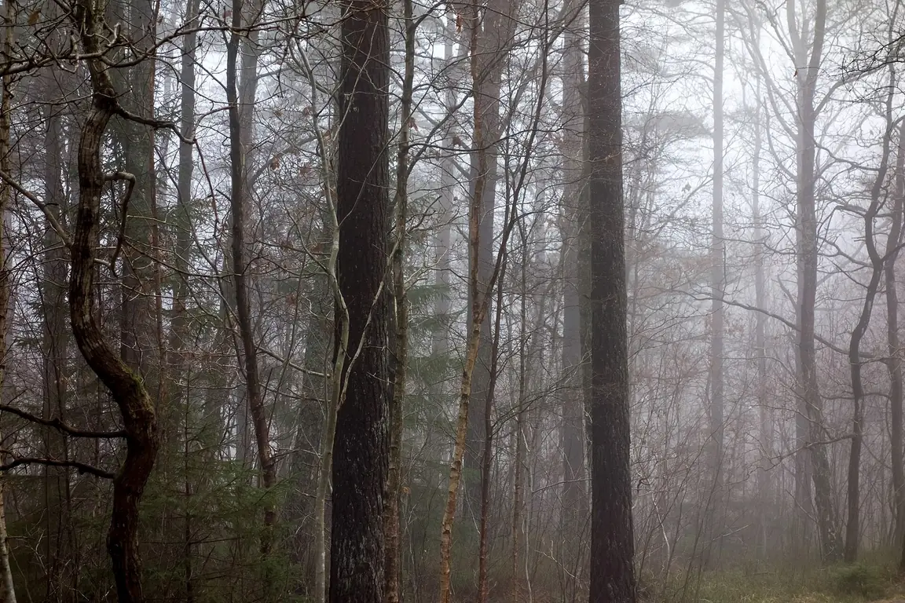
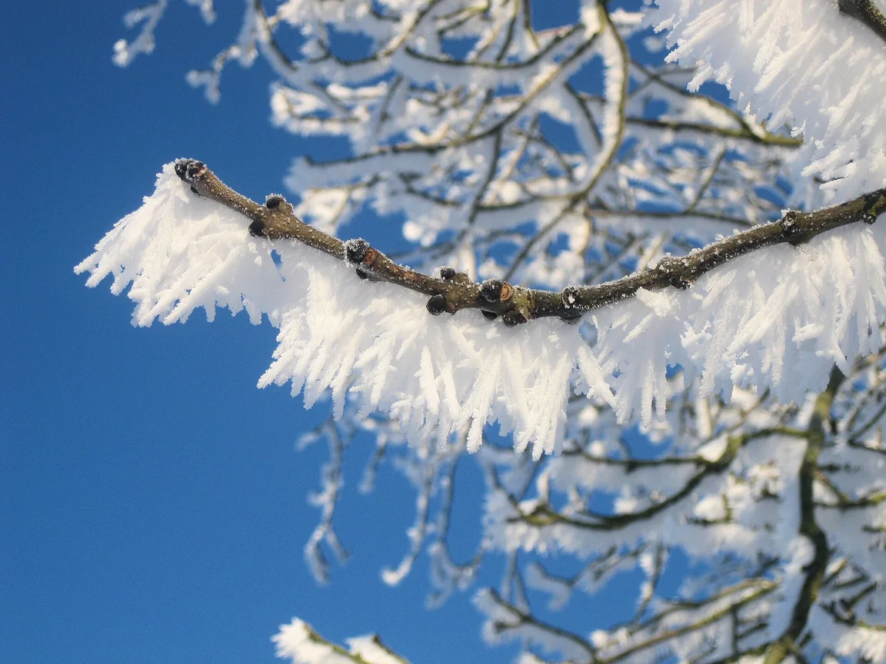
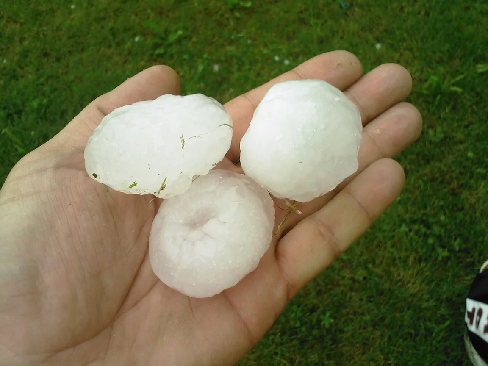
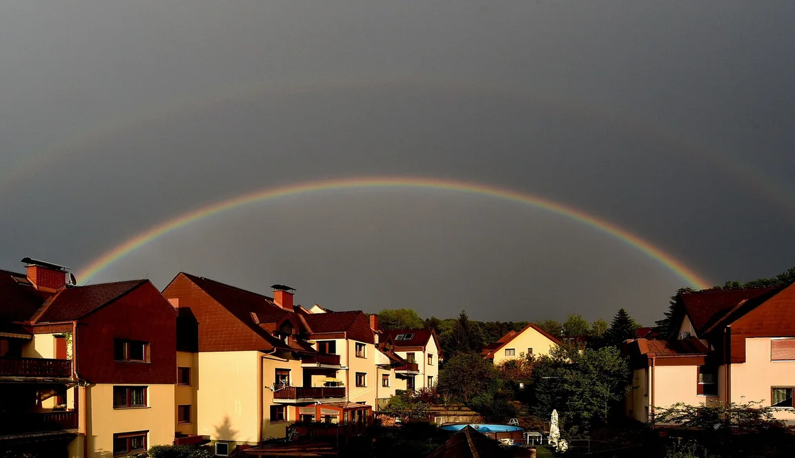
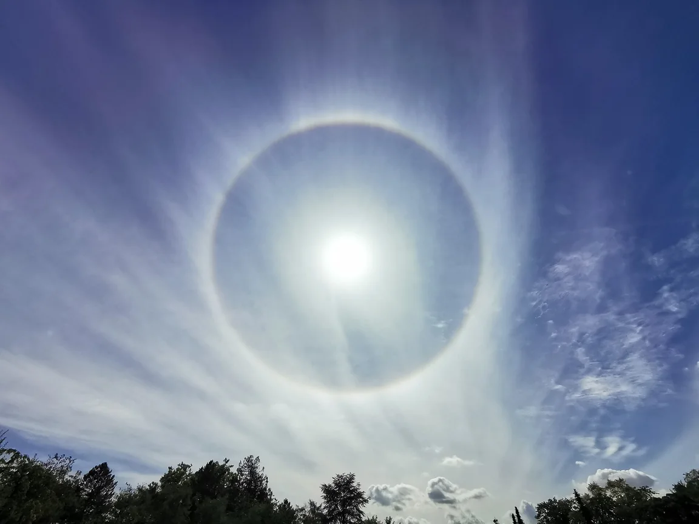
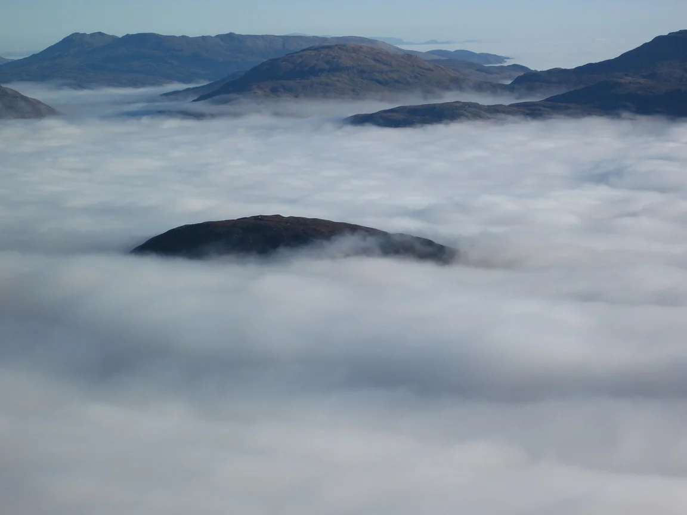

Vrstvy zdola
Troposféra (zhruba do 11 km, v ní je všechno počasí) → stratosféra (ozonová vrstva) → mezosféra (shoří v ní většina meteoroidů) → termosféra (polární záře, družice).
Pro 6.–7. ročník: složení vzduchu, vrstvy atmosféry, počasí a podnebné pásy.
Atmosféra je plynný obal Země. Tvoří ji hlavně dusík (78 %) a kyslík (21 %), zbytek jsou další plyny a vodní pára. S výškou vzduch řídne a dělí se na vrstvy.
Troposféra (zhruba do 11 km, v ní je všechno počasí) → stratosféra (ozonová vrstva) → mezosféra (shoří v ní většina meteoroidů) → termosféra (polární záře, družice).
Okamžitý stav ovzduší na určitém místě: teplota, srážky, vítr, oblačnost dnes, zítra, právě teď.
Dlouhodobý průměr počasí za desítky let. Popisuje, jaké to v kraji obvykle bývá – průměrné teploty, roční srážky, typická léta a zimy.
Jak je poznáš? Hledej v textu čas. Slova „dnes, zítra, v noci, právě“ ukazují na počasí. Slova „průměrně, ročně, bývá, celoročně“ ukazují na podnebí. Typická chyba: jedna horká zima ještě neznamená změnu podnebí – to je jen počasí v jednom roce.
Podnebí určuje hlavně to, jak vysoko Slunce během roku vystupuje. Proto se od rovníku k pólům střídají podnebné pásy: tropický, subtropický, mírný (Česko), subpolární a polární.
Rozhodni, zda věta popisuje počasí, nebo podnebí: „V Sahaře prší v průměru méně než 100 mm ročně.“
✅ Věta popisuje podnebí.
Počasí je okamžitý stav ovzduší na určitém místě, podnebí je dlouhodobý průměr počasí za desítky let. Vzduch tvoří hlavně dusík (78 %) a kyslík (21 %).
Skutečné fotografie osmi meteorologických jevů. Všímej si tvaru oblaků, světla a toho, kde se voda nebo led objevují.







